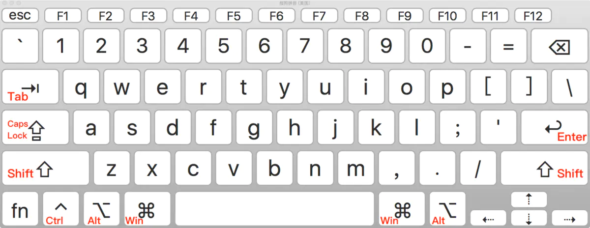
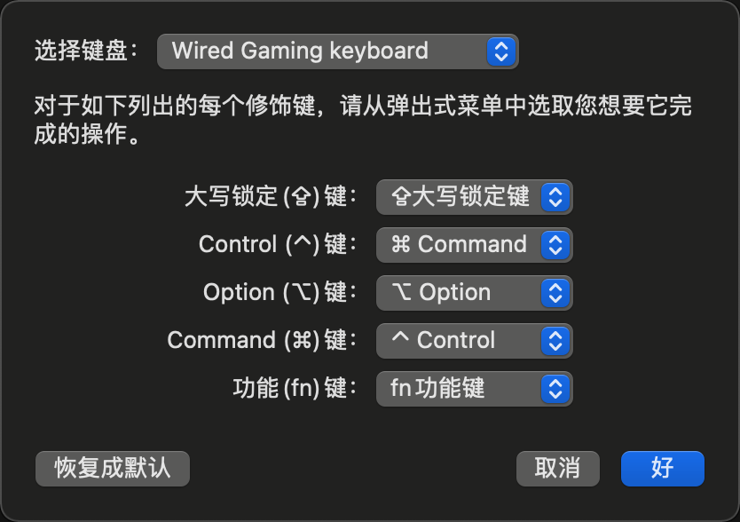
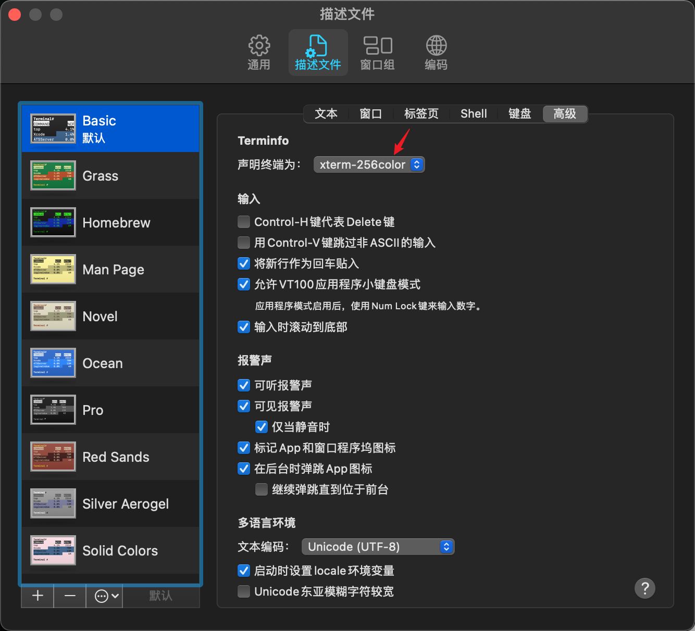
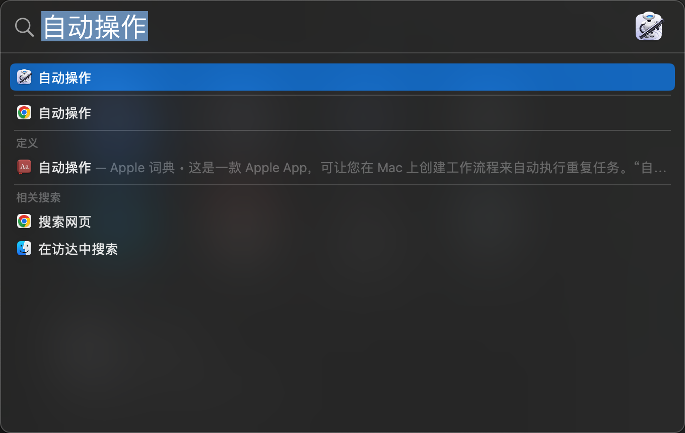
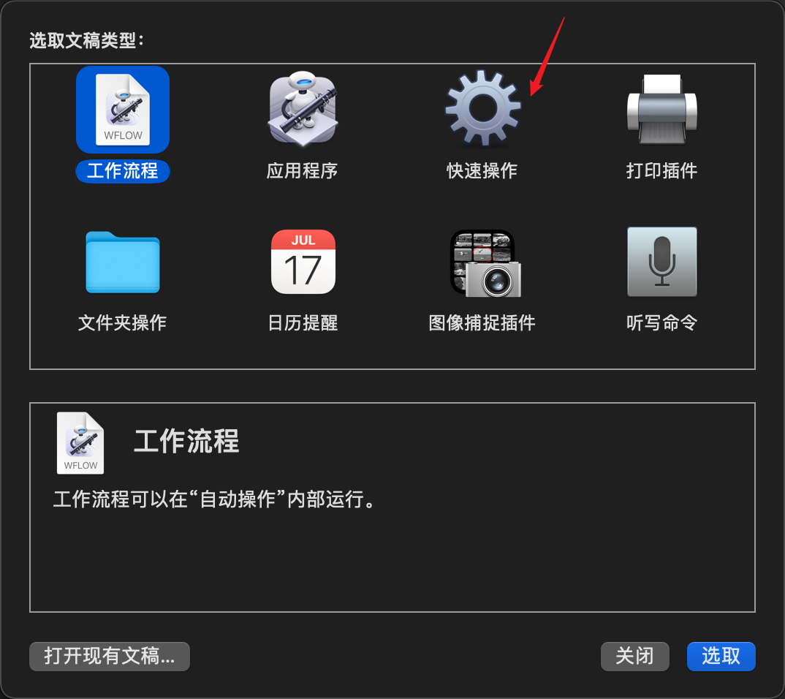
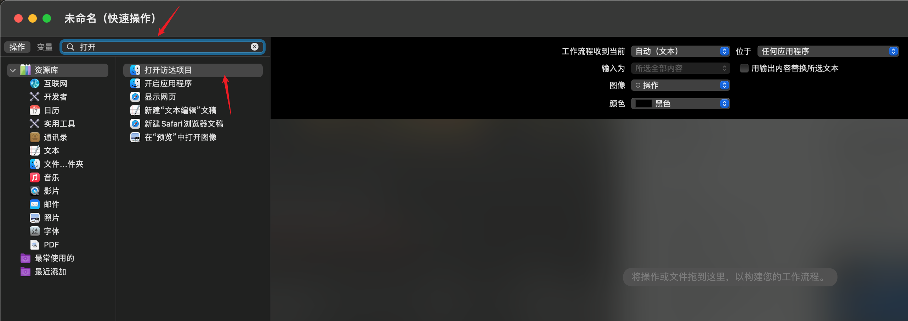
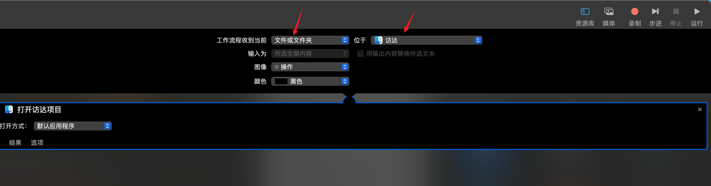
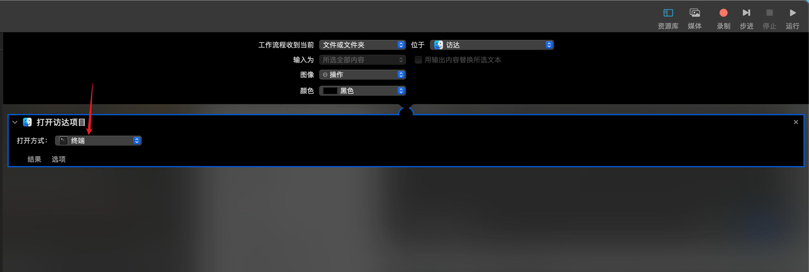
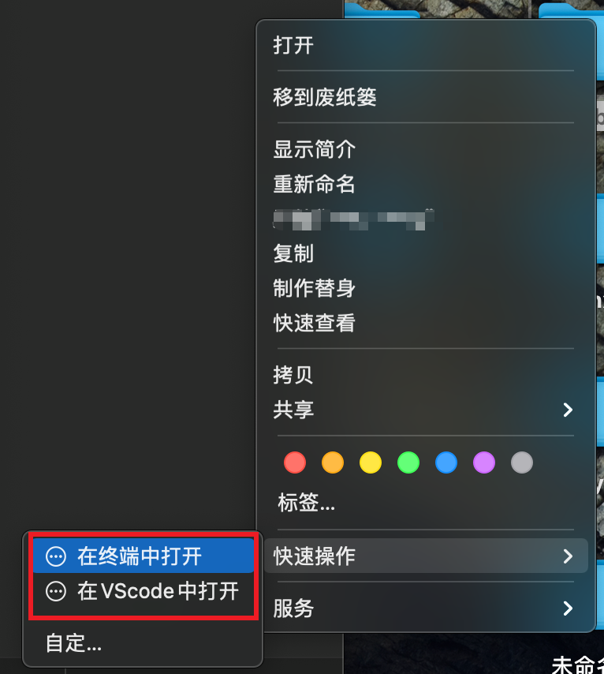

Mac实用小技巧
本文主要记录我在使用Mac操作系统中遇到的问题，不断更新
关键词：Mac
安装系统
由于我使用的是黑苹果，所以有了这一章😂，不打算在这里写，咕咕咕。。
略。
键盘问题
(⌃)Control-------------> Ctrl (⌥)Option-------------> Alt (⌘)Command--------> Win

如果不习惯这样的键位，可以在系统偏好设置——键盘——修饰键选项中更改Control和Win的位置，这样复制粘贴操作在两种系统的键盘上是一致的😄

美化自带终端
自带是zsh，直接装Oh-My-Zsh
Github
1 | sh -c "$(curl -fsSL https://raw.github.com/robbyrussell/oh-my-zsh/master/tools/install.sh)" |
Gitee
1 | sh -c "$(curl -fsSL https://gitee.com/mirrors/oh-my-zsh/raw/master/tools/install.sh)" |
设置主题
编辑~/.zshrc
1 | # 找到 ZSH_THEME |
设置history记录时间
1 | HIST_STAMPS="mm/dd/yyyy" |
设置插件
这个也是Oh-My-Zsh最有用的特性之一
1 | plugins=(docker docker-compose git zsh-autosuggestions) |
这里分别设置了docker、docker-compose、git命令和全局自动补全的命令。这些插件都是自带安装的。
设置kubectl的自动补全
https://kubernetes.io/zh/docs/tasks/tools/included/optional-kubectl-configs-zsh/
1 | source <(kubectl completion zsh) |
设置快捷命令行代理
1 | alias set_proxy='export https_proxy=http://localhost:7890;export http_proxy=http://localhost:7890' |
设置nerdctl别名为docker
这样就可以继续愉快的使用docker-cli命令了
1 | alias docker='nerdctl' |
设置终端颜色
终端——偏好——描述文件——高级，选择xterm-256color

SSH问题
ssh别名
编辑~/.ssh/config，设置对应的ssh别名
1 | Host github.com *.github.com coding.net *.coding.net jihulab.com *.jihulab.com |
ssh保持链接
客户端编辑/etc/ssh/ssh_config，在Host *加入
1 | ServerAliveInterval 30 # 每隔30s向server端sshd发送keep-alive包， |
或者是服务端编辑/etc/ssh/ssh_config，添加下列设置
1 | ClientAliveInterval 30 # 服务端每隔30秒向client发送一个数据包来保持链接 |
如果什么都不操作，服务端配置可以让连接保持 30s*60=30 min
共享ssh链接
如果需要在多个窗口中打开同一个服务器连接，可以尝试添加
~/.ssh/config，添加两行
1 | ControlMaster auto |
配置之后，第二条连接共享第一次建立的连接，加快速度。
添加长链接设置
1 | ControlPersist 4h |
每次 SSH 连接建立之后，此条连接会被保持 4 小时，退出服务器之后依然可以重用。
配置连接中转
1 | ForwardAgent yes |
当需要从一台服务器连接到另一台服务器，同时两台服务器需要传输数据，以上设置可以不用通过本地电脑中转。
开机或定时执行任务
launchctl是一个统一的服务管理框架，启动、停止和管理守护进程、应用程序、进程和脚本。
编写plist文件
定时执行
1 |
|
开机启动
1 |
|
选择存放plist文件位置
建议存放在~/Library/LaunchAgents路径下。
1 | * ~/Library/LaunchAgents 由用户自己定义的任务项 |
加载命令
加载任务
1 | launchctl load -w com.denglibing.checkin.plist |
删除任务
1 | launchctl unload -w com.denglibing.checkin.plist |
查看任务列表
1 | launchctl list | grep 'com.denglibing' |
启动任务
1 | launchctl start -w com.denglibing.checkin.plist |
关闭任务
1 | launchctl stop -w com.denglibing.checkin.plist |
添加快速操作到文件夹
有时需要添加一个操作如在终端中打开文件夹、在VScode中打开文件夹等
- 打开自动操作
command + space搜索自动操作

- 选择快速操作

- 搜索框输入打开，选中打开访达项目

- 工作流程收到当前一栏选择文件或文件夹，并选中位于访达

- 打开方式选择你想要打开的应用程序，这里选择最常用的终端

- 验证效果
